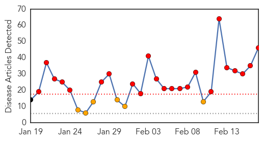
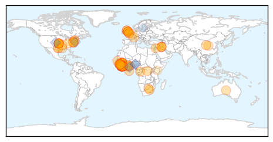

Swine Flu
30-Day Web Trend
23 alerts, 6 warnings

30-Day Twitter Trend
0 alerts, 0 warnings

Article Locations

Article Confidences

Top Articles:
- 1.000
- How YOU can protect yourself from swine flu
- 1.000
- Five myths about swine flu and what you should do if you are infected
- 1.000
- India faces worst swine flu outbreak in five years, but death rate down
- 1.000
- Death toll in swine flu climbs to 812 in India: All you need to know about the deadly virus
- 1.000
- Meghalaya under watch for swine flu
- 0.999
- Hospital falls short of swine flu protection
- 0.999
- 9311 Cases Of Swine Flu Registered, 624 Lives Claimed
- 0.999
- H1N1 threat grave as death toll rises to 79 across Madhya Pradesh
- 0.999
- Swine flu claims 81 in MP
- 0.999
- Kid dies, 5 more test positive for swine flu in Bhopal
- 0.999
- 3 Bhopal doctors infected by swine flu, 1 more die
- 0.999
- 37 new cases of swine flu in city on a single day jolts BMC
- 0.999
- Over 596 dead due to swine flu, Centre orders additional stocks of medicines
- 0.998
- First swine flu case in Northeast
- 0.998
- Critical units prepared to tackle H1N1
- 0.996
- Eight more swine flu deaths in Rajasthan, toll 183
- 0.996
- Swine flu kills 600-plus in India, refuses to die
- 0.995
- Swine flu toll rises to 150 in Gujarat
- 0.995
- Swine flu hits Jaipur hard, east, north Rajasthan ‘spared’
- 0.994
- No shortage of swine flu drug, says health official
- 0.994
- Healthcare experts turn to ayurveda to fight H1N1
- 0.993
- Gujarat government insists it is 'handling' swine flu as death toll hits 150
- 0.993
- 125 swine flu cases reported in UP
- 0.992
- H1N1 may subside in a week or two: Experts
- 0.991
- 100 deaths in 3 days; toll 624. Is India heading towards an epidemic?
- 0.990
- Swine flu test rates rise in Delhi, labs mint money : Delhi, News
- 0.987
- First swine flu death in Himachal Pradesh
- 0.986
- Swine flu under control in Karnataka: Minister for health U T Khader
- 0.985
- First swine flu death in Himachal
- 0.985
- First swine flu death in Himachal
- 0.984
- First swine flu death in Himachal
- 0.984
- First swine flu death in Himachal
- 0.984
- First swine flu death in Himachal
- 0.984
- 100 Indians Have Died of Swine Flu in the Last Three Days
- 0.974
- One H1N1 death confirmed; two more cases suspected
- 0.973
- Satna jail inmate dies of swine flu
- 0.965
- Swine flu claims nearly 600 lives in India , news, Health News, AsiaOne YourHealth
- 0.965
- H1N1 patients from Sheopur rush to Rajasthan treatment
- 0.929
- Swine flu claims nearly 600 lives in India this year - Xinhua
- 0.890
- A man of 49 dies of swine flu in Setif hospital
- 0.802
- Spurt in swine flu cases; toll over 620
- 0.800
- Defence Research and Development Establishment facility at Gwalior helps test H1N1 samples
- 0.783
- newkerala.com, India Regional News 20355
- 0.717
- H1N1 medicines still out of stock in Bengaluru
- 0.550
- Lifeline for pregnant woman with H1N1 and baby
- 0.544
- Lifeline for pregnant woman with H1N1 and baby
Top Tweets:
-
No tweets found for Feb 17, 2015
Ebola
30-Day Web Trend
0 alerts, 0 warnings

30-Day Twitter Trend
7 alerts, 3 warnings

Article Locations
Article Confidences

Top Articles:
- 1.000
- Ebola: new study models a deadly epidemic
- 0.999
- Ebola-Hit Nations Aim for No New Cases in 60 Days
- 0.999
- Ebola: British health worker brought to UK from Sierra Leone for assessment
- 0.999
- Liberia says six cases of Ebola remains nationwide
- 0.999
- Sierra Leone Sees 'Sharp Rise' in Ebola Cases as Medical Funding Goes Missing
- 0.999
- UK Health Worker Transported to Britain On Suspicion of Ebola
- 0.998
- West Africa Ebola: China sent medical teams, experts to help
- 0.998
- ECDC seeks epidemiologists for Ebola team in Guinea
- 0.997
- UNDP administrator inspects Liberia over Ebola
- 0.997
- Ebola outbreak: British NHS worker evacuated from Sierra Leone
- 0.997
- UNMEER boss commends SLAJ Yellow Ribbon campaign « Awoko Newspaper
- 0.996
- FAO unveils Guinea project for Ebola prevention, rural recovery
- 0.996
- South Africa still contributing to the fight against Ebola
- 0.995
- Ebola-Vaccine Testing May Face Problems Because of a Lack of Patients
- 0.995
- UNMEER boss commends SLAJ Yellow Ribbon campaign
- 0.994
- Ebola Is Not Over, but Liberia's Children Go Back to School Anyway
- 0.993
- Ebola risk worker back in UK
- 0.993
- Report: Long-term Ebola threat makes vaccines essential
- 0.991
- Liberia Schools Reopen After 6 Months With Increased Ebola Prevention Precautions
- 0.990
- Threat of Deadly Pathogens on the Rise Thanks to Climate Change
- 0.990
- Hopkins helps make training videos on Ebola and infectious disease care
- 0.989
- UN development chief begins last leg of West Africa mission
- 0.989
- Brit aid worker evacuated from Sierra Leone in Ebola scare
- 0.989
- Schools reopen as Liberia turns page on Ebola epidemic
- 0.988
- Liberia schools reopen after six-month Ebola closure
- 0.987
- Liberia schools reopen after 6-month Ebola closure
- 0.986
- Liberia schools reopen after six months
- 0.983
- Care International on Post Ebola Strategy « Awoko Newspaper
- 0.982
- The Post
- 0.980
- Sledding at Pleasant Plains Elementary
- 0.980
- Teen killed in Essex shootout had 6 weapons
- 0.980
- 'Everyone's a little bit racist'
- 0.980
- Without governor's input, parole commission may speed prisoner release
- 0.980
- 14 killed in Afghan terror attack
- 0.980
- WESLEY PRUDEN: Obama remains ignorant as anti-Semitism makes a comeback
- 0.980
- Md. Senate unanimously approves a Vietnam veteran day
- 0.980
- Md. woman delivers babies at 56, but dies days later
- 0.980
- Minnesota uses outreach program to combat ISIL recruiting
- 0.980
- Kentucky teen, suspect in triple homicide, was in N.J. on way to Baltimore
- 0.978
- the edge of knowledge
- 0.974
- Patient tests negative for Ebola
- 0.969
- Modern Healthcare Modern Healthcare business news, research, data and events
- 0.968
- NYC Doctor Who Contracted Ebola to Speak at Wayne State University
- 0.961
- Schools reopen in Ebola-hit Liberia
- 0.957
- Sierra Leones Rescue Team Comprised of Ebola Survivors Supporting Each Other
- 0.951
- Taylor-Era Wartime Timber Company Penalized, Accused of PUP Breach
- 0.951
- Civil Society Meet On Trial Vaccines
- 0.951
- SLPP in Suicide Mission
- 0.951
- Liberia: Lawmakers Tightlipped On Whistleblower Allison's Death
- 0.951
- Liberian refugees in Cote d'Ivoire protest to demand UN assistance
Showing top 50 articles...
Top Tweets:
- 0.944
- Schools in Liberia Reopen After a Six-Month Closure Due to Ebola - TIME http://t.co/MfTxyQaXQC ebola EVD
- 0.936
- Ebola outbreak: British NHS worker evacuated from Sierra Leone - http://t.co/9p21lKLIva http://t.co/oRQMtKBKV8 ebola EVD
- 0.905
- The Grandpa Who Saved His Granddaughter From Ebola - NPR (blog) http://t.co/l7NfX4htAQ ebola EVD
- 0.898
- Baltimore Gown Designer Goes To Fashion Week With Ebola Suit - CBS Local http://t.co/zxDWHRVM8x ebola EVD
- 0.898
- Baltimore Gown Designer Goes To Fashion Week With Ebola Suit - CBS Local http://t.co/6Bkh9w2t2G ebola EVD
- 0.896
- RT: 22% of patients Hosp in SL between 2011&2014 had anti-Ebola virus (EBOV) IgG or IgM, suggesting prior exposure 2 Eb…
- 0.894
- Ebola Outbreak: Liberia Schools Reopen After 6-Month Closure - http://t.co/FMQyohd10H http://t.co/E1DDispRXQ ebola EVD
- 0.891
- U.S. Soldier, Scientists begin closing down Ebola Testing Labs in Liberia - Clarksville Online http://t.co/HZXxTXiGEB ebola EVD
- 0.868
- After Ebola: What next for West Africas health systems by HumanRights https://t.co/uBWtAMD7tD - @Oximity Expand Mobile Health!
- 0.850
- Ebola Update: 23,182 confirmed, probable and suspected cases reported in 3 most affected countries, with 9,353 deaths. EbolaResponse
- 0.819
- A third of Sierra Leone's Ebola budget unaccounted for, says report - The Guardian http://t.co/4J41gpSuXh ebola EVD
- 0.774
- RT: Health worker with potential exposure to Ebola transported to UK (from Sierra Leone) for precautionary monitoring http://t.co/…
- 0.771
- Nouvelles initiatives de sécuritéalimentaire en faveur des communautés rurales dévastées par Ebola en Guinée http://t.co/i3A84hbUgC
- 0.657
- Ebola: the race to find a cure - The Guardian http://t.co/LhDglhRnZe ebola EVD
- 0.657
- Ebola: the race to find a cure - The Guardian http://t.co/HYgrSinhsx ebola EVD
- 0.617
- Last Mile of Ebola? Eliminate and Control via expanded Health Systems, Labs and Clinics. https://t.co/VfuFk253P2
- 0.600
- Dress Designer Switches Gears, Helps Create New Ebola Protective Suit - CBS Local http://t.co/VNxwyxQ87c ebola EVD
- 0.535
- Liberia schools reopen after six-month Ebola closure back2school @AJEnglish http://t.co/jfBhxHM0fy